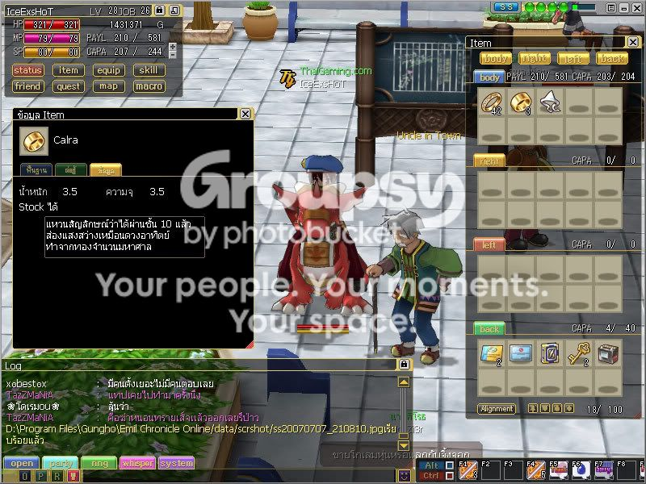
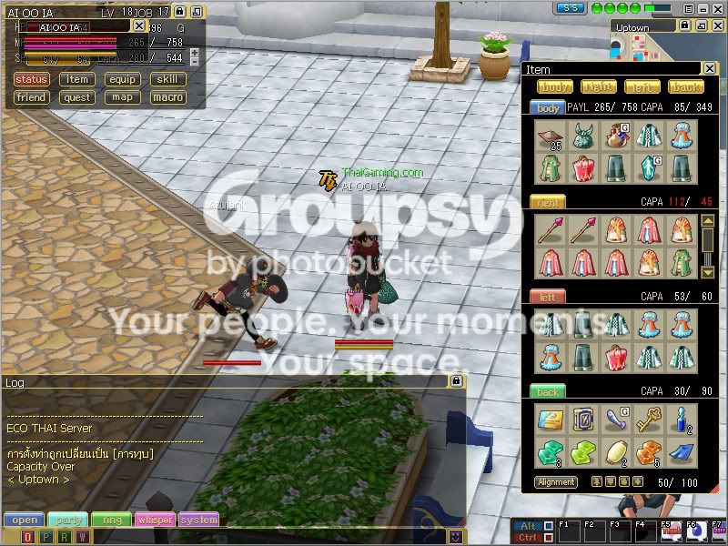
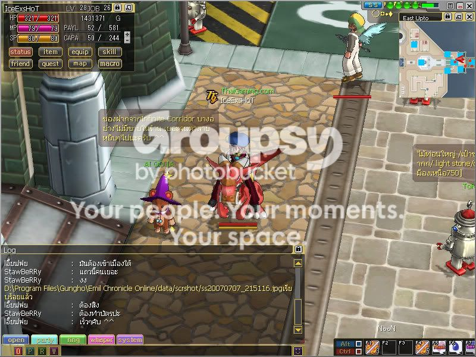

อืม ละนอกจาก sword delay แล้ว มี skill อะไรที่เต็ม 3 มะ
ม่ายมี
เล่นมั่ง อิอิ นักดาบ ท่าจะเล่นง่าย
แต่ของใส่ราคาสูงที่สุดในทุกอาชีพครับ
เล่งคู่เยยจิ มันดี เบื่อ scout ก็มาเล่ง sword แต่ถ้าเปง pvp ก็ sword มั้ง -.- มีท่าพุ่งเสียบนี่นา
ระวัง สาวกscout มาประท้วง - -*
มันยังเป็นข้อถกเถียงกันอยู่ว่าใครจะชนะ
scout เร็ว หลบหลี หายตัว
sword man damage/hit แรง อึด
รอดูต่อไป
อยากทราบว่า หมวกเสือที่พูดถึงกันมันบวก อาไรหว่า
+str3 แต่ไม่สนใจแล้ว (น้อยใจ) ไม่เอาก็ได้เซง ต่อด้านล่าง
เมื่อกี้ไปล่าวแหวนมาเป็นที่เรียบร้อยแล้ว ไป3ตัว ตัวละ15point
ได้แหวนชั้น5 42 วง ชั้น 10 3วง

ลุ้นๆว่าได้ไรมั่ง
ของดี
Golem Beryl (ตัวผลึกจิ๋ว) 1ตัว
Golem Tiny (น้องหมี) 1ตัว
ของใส่
original jacket (ทั้งไททาเนียกับโดมินอน)ทั้งหมด 5ตัว
กางเกงlv20 (ทั้งไททาเนียกับโดมินอน) 7ตัว
field jacket สีดำ 2 ตัว
ชุดone-piece หญิง (ชมพู) 4 ตัว
ชุดนักเวทเลเวล20 6 ตัว
ชุดสำหรับผู้ชายlv.15 3ตัว
กระเป๋ามือซ้าย 2 ใบ
ถุงมือซ้าย 1 ถุง
คทาlv.21 2 อัน
ขยะ
green seriko 3
light green seriko 1
easy thread 2
orange seriko 5
silk 1
heal potion 2

สรุป ยังไม่เห็นวี่แววของหมวกเสือเลย ซึ้งแล้วตอนนี้ไม่เอาก็ได้ หือๆๆ Y_Y
เอาของไปตั้งร้านขายรวมๆก็200k ใครอยากได้ไรไปเลือกเอานะครับ ทีสะพานทิศตะวันออก uptown sv.2 takoyaki
